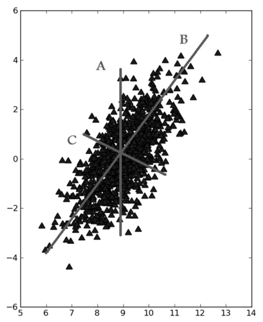
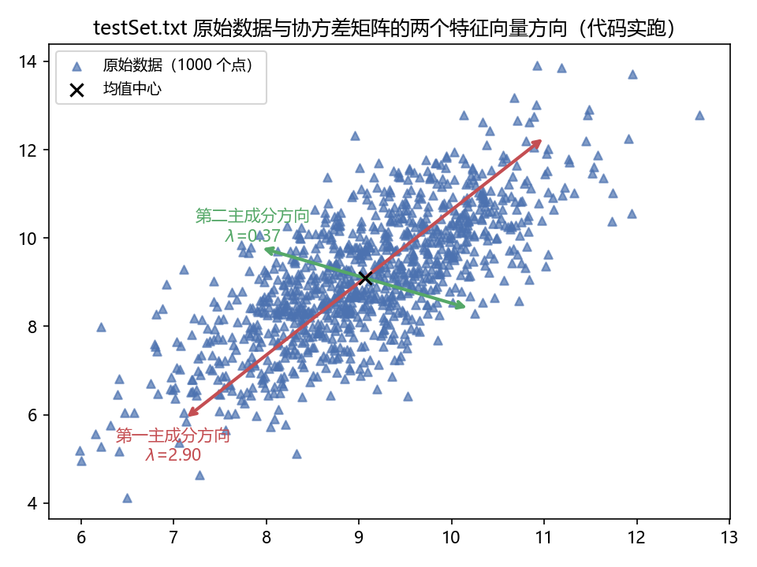
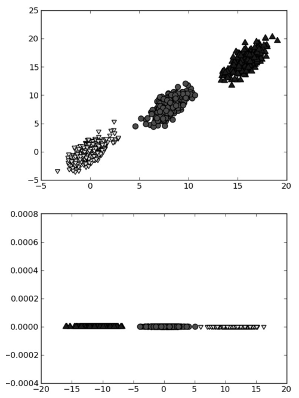
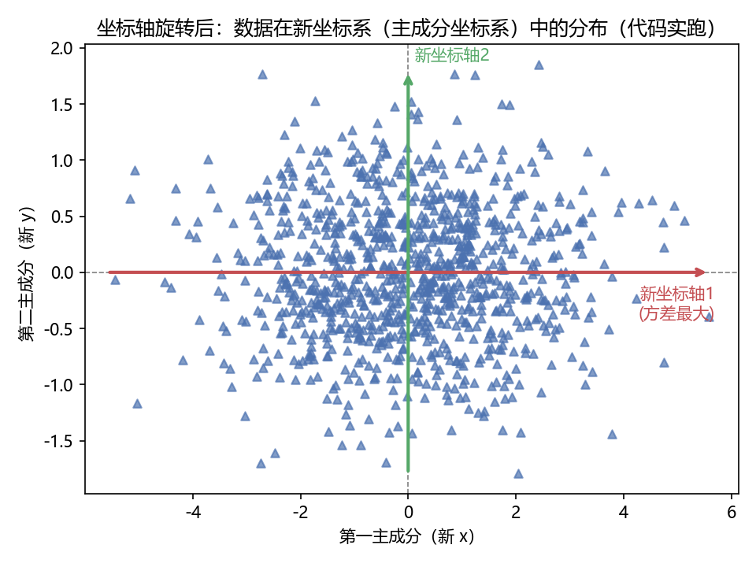
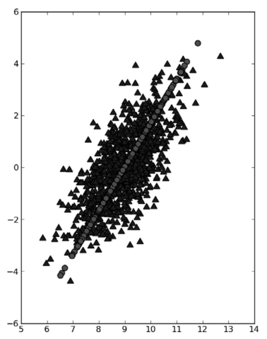
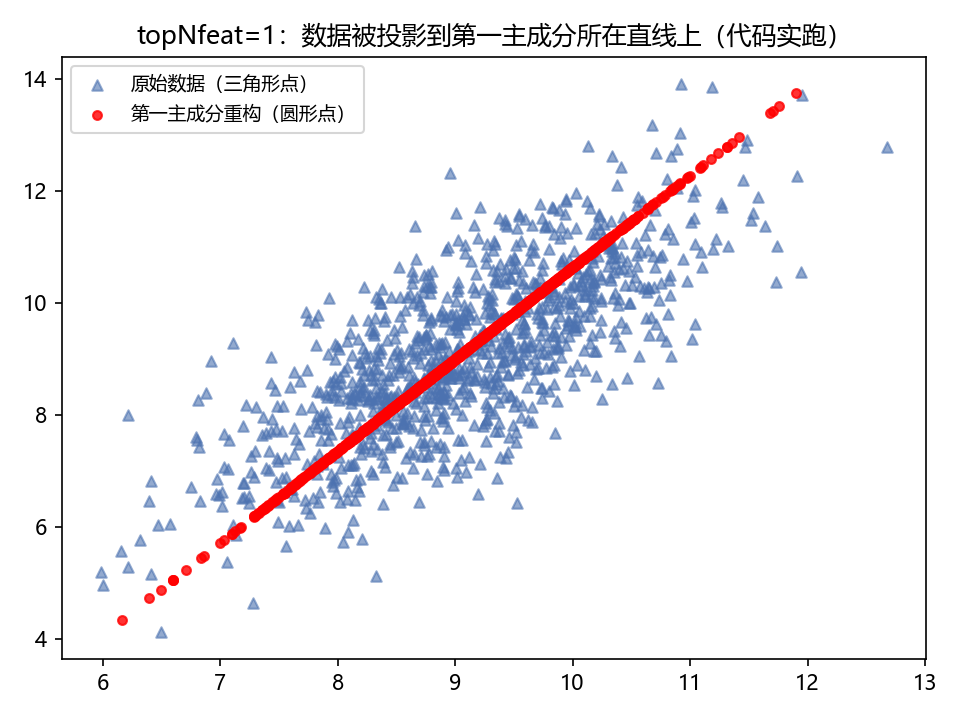
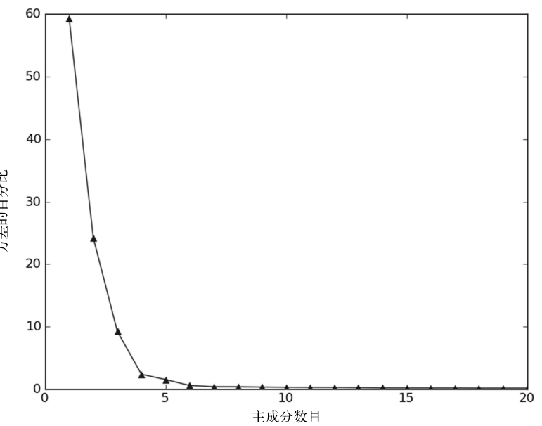
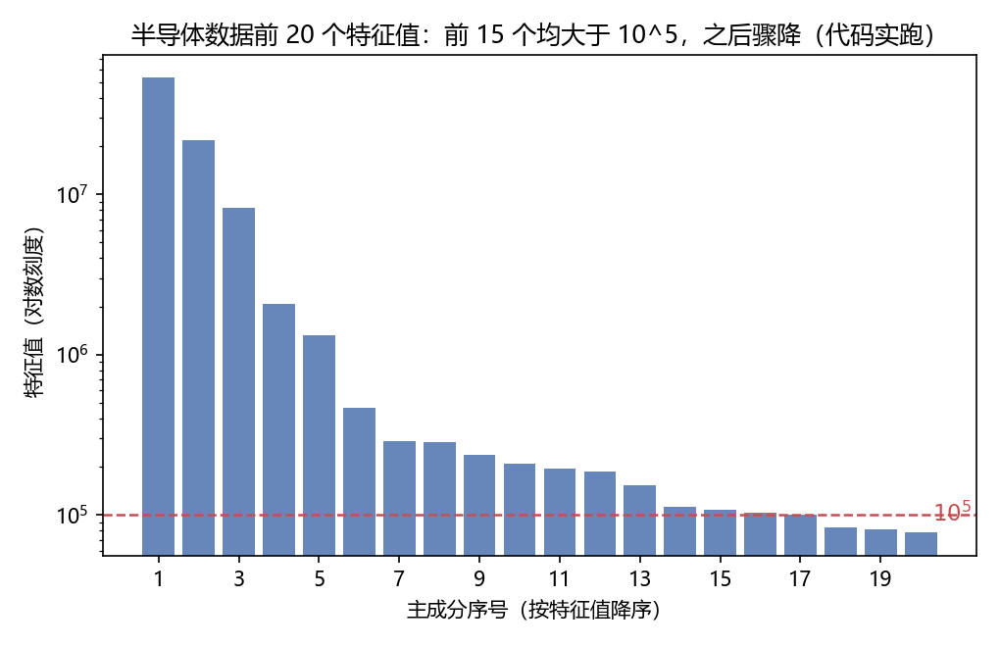
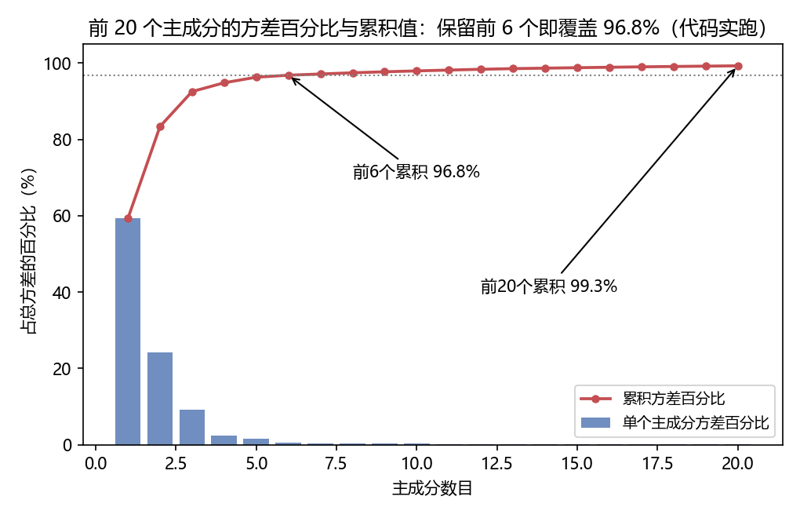

第 13 章 利用PCA来简化数据#
本章解决：特征太多、数据太"肥"怎么办——就像看球赛时把显示器上的百万像素自动提炼成"球在哪"这一个三维位置。降维（dimensionality reduction）让数据更易用、计算更省、还能去噪，是喂给其他机器学习算法之前的预处理步骤。本章主讲其中应用最广的主成分分析（PCA，Principal Component Analysis），并把一个 590 特征的半导体制造数据集压到 6 个特征，实现约 100∶1 的压缩。
| 关键词 | 事实 |
|---|---|
| 定位 | 降维主题两章中的第一章（下一章：利用 SVD 简化数据） |
| 优点 | 降低数据的复杂性，识别最重要的多个特征 |
| 缺点 | 不一定需要，且可能损失有用信息 |
| 适用数据类型 | 数值型数据 |
| 核心工具 | 协方差矩阵 + 特征值分析（NumPy 的 linalg.eig()） |
| 本章实例 | 半导体制造数据 SECOM：590 特征 → 6 特征，约 100∶1 压缩 |
先看书里那个开场例子。我们通过电视看体育比赛，纯平显示器上有一个球。显示器大概包含 100 万个像素，球可能只占其中一千个。比赛里我们真正关心的是球在运动场中的位置——大脑不知不觉就把显示器上的百万像素实时转换成了一幅三维图像，也就是球的位置。这个过程里，数据已经从一百万维降到了三维：人们面对的原本是百万像素的数据，但只有球的三维位置才最重要。这就是降维。
降维的收益有两层：低维下数据更容易处理；相关特征会在低维空间里明确显示出来。通常而言，在应用其他机器学习算法之前，必须先识别出相关特征——降维正是干这个的。
运行环境
- 13.2 节的演示数据
testSet.txt（1000 个点）与 13.3 节的半导体数据secom.data（1567 行 × 590 特征）均放在E:\Desktop\深度学习\_ml_data\Ch13\，来源为原书官方仓库pbharrin/machinelearninginaction的 Ch13 目录。笔记代码按原书习惯使用相对文件名，运行时工作目录需在该目录（或自行改成绝对路径）； - 运行环境为 Python 3.10 + NumPy 2.2（machinelearn 环境）。原书是 Python 2 + 老版 NumPy，差异处（
list(map(...))、mat()→asmatrix()）已在代码注释和!!! warning中标明； - 本节所有"代码实跑"插图与关键数值均为本笔记实际运行所得，并与原书逐值对照（对照结果见 13.2.2 与 13.3）。
13.0 本章导图#
13.1 降维技术#
始终贯穿本书的一个难题是对数据和结果的展示：这本书是二维的，而数据往往拥有超出显示能力的更多特征——有时可以显示三维图像，或者只显示相关特征，但大都不够。数据显示还不是大规模特征下的唯一难题，对数据进行简化还有下面一系列原因：
- 使得数据集更易使用；
- 降低很多算法的计算开销；
- 去除噪声；
- 使得结果易懂。
在已标注与未标注的数据上都有降维技术。本章主要关注未标注数据上的降维技术——该技术同时也可以应用于已标注的数据。
原书给出了三种有代表性的降维技术：
| 技术 | 核心假设 | 降维从哪来 | 应用 |
|---|---|---|---|
| 主成分分析（PCA） | 新坐标系由数据本身决定，最大方差的方向最重要 | 保留前方差最大的正交坐标轴，忽略其余 | 应用目前最为广泛（本章主角） |
| 因子分析（Factor Analysis） | 观察数据是观察不到的隐变量和某些噪声的线性组合 | 隐变量的数目可能比观察数据的数目少 | 社会科学、金融等领域 |
| 独立成分分析（ICA） | 数据由 N 个统计独立的数据源混合生成 | 数据源数目少于观察数据数目时即可降维 | 多源信号分离 |
PCA。数据从原来的坐标系转换到新的坐标系，新坐标系的选择由数据本身决定：第一个新坐标轴选择的是原始数据中方差最大的方向；第二个新坐标轴与第一个正交、且具有最大方差。该过程一直重复，重复次数为原始数据中特征的数目。结果你会发现，大部分方差都包含在最前面的几个新坐标轴中——忽略余下的坐标轴，就完成了降维（细节见 13.2 节）。
因子分析。假设在观察数据的生成中有一些观察不到的隐变量（latent variable），观察数据是这些隐变量和某些噪声的线性组合。隐变量的数目可能比观察数据的数目少，找到隐变量就实现了降维。它已经应用于社会科学、金融等领域。
ICA。假设数据是从 N 个数据源生成的，数据是多个数据源混合的观察结果，这些数据源之间在统计上相互独立——注意 PCA 只假设数据是不相关的，ICA 的假设更强。与因子分析一样，数据源数目少于观察数据数目时即可实现降维。
拓展：三种降维技术怎么选
三种方法的差别在"假设强度"：PCA 只要求找方差大的方向，假设最弱、用起来最省心，所以应用最广；因子分析带着社会科学血统（比如把几十道心理量表题归因于几个看不见的能力维度）；ICA 假设最强（统计独立），分离能力也最强，经典应用是"鸡尾酒会问题"——麦克风录到两个人同时说话，ICA 能把两个声源分开。还有一个容易忽略的点：PCA 是方差导向，ICA 是独立性导向，两者可能给出完全不同的"主方向"。方差大不等于独立，独立也不等于方差大，选哪种取决于你关心的"信息"是什么。
13.2 PCA#
| 优点 | 降低数据的复杂性，识别最重要的多个特征 |
|---|---|
| 缺点 | 不一定需要，且可能损失有用信息 |
| 适用数据类型 | 数值型数据 |
本节先讲 PCA 背后的理论知识，再用 NumPy 实现。
13.2.1 移动坐标轴#
看图 13.1 中的大量数据点：如果要求画出一条直线，这条线要尽可能覆盖这些点，最长的线是哪条？图里 3 条直线中 B 最长。PCA 对数据的坐标进行旋转，旋转过程取决于数据本身：第一条坐标轴旋转到覆盖数据的最大方差位置，即直线 B。数据的最大方差给出了数据的最重要的信息。

选完第一条坐标轴，再选第二条：它与第一条垂直，是覆盖数据次大差异性的坐标轴。更严谨的说法是正交（orthogonal）——在二维平面下，垂直和正交是一回事。图 13.1 中直线 C 就是第二条坐标轴。利用 PCA，我们把数据坐标轴旋转至数据角度上那些最重要的方向。

坐标轴旋转完，接下来讨论降维。注意：坐标轴的旋转并没有减少数据的维度。看图 13.3，其中包含 3 个不同的类别。要区分它们，决策树的思路是每次基于一个特征做决策——在 x 轴上可以找到一些值很好地分开这 3 类，得到"当 X<4 时属于类别 0"这样的规则。换成 SVM 这种稍复杂的分类器，会得到更好的分类面和分类规则，比如"当 (w0*x + w1*y + b) > 0 时属于类别 0"——SVM 的分类间隔更好，但分类超平面很难解释。

通过 PCA 降维，可以同时获得 SVM 和决策树的优点：一方面得到和决策树一样简单的分类器，另一方面分类间隔和 SVM 一样好。看图 13.3 下图（数据来自上图、经 PCA 转换后绘制）：间隔比仅用原始数据时更大；而且只需要考虑一维信息，用比 SVM 简单得多的规则就能区分。另一维只是对分类缺乏贡献的噪声数据。二维下这点微不足道，但在高维空间下意义重大。
拓展：图 13.3 下图的点为什么排成一条横带
PCA 把数据投影到第一主成分后，第二维的坐标都近似为 0，所以点带宽度≈第二主成分的残余方差。它不是"数据变少了"，而是"数据换了坐标系再被裁掉一截"。这一点在 13.2.2 的实跑图（图 13.4）里能看得更清楚。
小结 PCA 的语言：第一个主成分（principal component）就是从数据差异性最大（方差最大）的方向提取出来的；第二个主成分来自差异性次大的方向，且与第一个主成分方向正交。这些主成分的值可以通过数据集的协方差矩阵及其特征值分析求得。一旦得到了协方差矩阵的特征向量，就保留最大的 N 个值——这些特征向量给出了 N 个最重要特征的真实结构，把数据乘上这 N 个特征向量，就转换到了新空间。
侧栏：特征值分析（Eigenvalue Analysis）
特征值分析是线性代数中的一个领域，它能通过数据的一般格式揭示数据的"真实"结构，也就是特征向量和特征值。核心等式是 \(A v = \lambda v\)：\(v\) 是特征向量，\(\lambda\) 是特征值（标量）。等式的含义是：如果特征向量 \(v\) 被某个矩阵 \(A\) 左乘，结果等于某个标量 \(\lambda\) 乘以 \(v\)——矩阵对它的作用只是缩放，不改变方向。幸运的是，NumPy 中有寻找特征向量和特征值的模块 linalg，其 eig() 方法一次返回特征值和特征向量。
拓展：为什么"方差最大方向"恰好是协方差矩阵的特征向量
去均值后的数据沿单位向量 \(v\) 投影，其方差为 \(v^{\top} \Sigma v\)（\(\Sigma\) 是协方差矩阵）。在约束 \(\lVert v \rVert = 1\) 下用拉格朗日乘数法求这个式子的最大值，一阶条件正是：
也就是说，最大方差方向必须是 \(\Sigma\) 的特征向量，且对应的特征值 \(\lambda\) 就是该方向上的方差。所以"特征值从大到小排序"等于"主成分按重要性排序"，这是整套 PCA 流程的数学地基。
13.2.2 在 NumPy 中实现 PCA#
将数据转换成前 N 个主成分的伪码大致如下：
建立一个名为 pca.py 的文件，加入下列代码。原书清单 13-1 是 Python 2 写法，笔记改写成 Python 3 可直接运行：
# ===== 书 13.2.2 节 程序清单13-1 PCA算法（Python 3 改写）=====
import numpy as np
def loadDataSet(fileName, delim='\t'):
fr = open(fileName)
stringArr = [line.strip().split(delim) for line in fr.readlines()]
# 原书写作 datArr = [map(float, line) for line in stringArr]
# Py3 的 map() 返回迭代器，必须套 list() 才能构建矩阵：
datArr = [list(map(float, line)) for line in stringArr]
return np.asmatrix(datArr) # 原书用 mat()；NumPy 2.0 已删除，asmatrix 等价
def pca(dataMat, topNfeat=9999999):
# topNfeat：应用的 N 个特征（主成分数）。不指定则返回前 9999999 个，
# 即保留原始数据中的全部特征
meanVals = np.mean(dataMat, axis=0) # ① 按列求均值（每个特征一个均值）
meanRemoved = dataMat - meanVals # ① 每列减去自己的均值
covMat = np.cov(meanRemoved, rowvar=0) # ② 协方差矩阵；rowvar=0 → 每列是一个特征
eigVals, eigVects = np.linalg.eig(np.asmatrix(covMat)) # ③ 特征值 + 特征向量
eigValInd = np.argsort(eigVals) # ④ argsort 从小到大排序（返回索引）
eigValInd = eigValInd[:-(topNfeat + 1):-1] # ④ 负步长切片：从末尾倒取 N 个 → 最大 N 个的索引
redEigVects = eigVects[:, eigValInd] # ⑤ 按索引重排（截取）特征向量的列
lowDDataMat = meanRemoved * redEigVects # ⑥ 数据乘特征向量 → 转换到新空间（降维结果）
reconMat = (lowDDataMat * redEigVects.T) + meanVals # 重构回原维度（调试用）
return lowDDataMat, reconMat
原书代码为 Python 2，两处必改
datArr = [map(float, line) for line in stringArr]：Python 3 的map()返回迭代器而不是列表，asmatrix拿到一堆 map 对象会直接报错。必须写成list(map(float, line))。- 原书
from numpy import *后使用的mat()在 NumPy 2.0 中已被移除（报AttributeError），用等价的np.asmatrix()代替。矩阵乘法*在asmatrix上行为不变。
逐块过一遍：
- loadDataSet() 与前面章节的版本不同：这里用了两个列表推导来构建矩阵——第一层按行切开，第二层把每行转成浮点数。
- pca() 有两个参数：第一个是用于 PCA 操作的数据集；第二个
topNfeat是可选参数，即应用的 N 个特征。不指定时返回前 9 999 999 个特征，或者说原始数据中的全部特征——所以不带参数调用等于"只旋转坐标轴、不降维"。 - ①②③ 先计算并减去原始数据集的平均值，再计算协方差矩阵及其特征值。
- ④
argsort()对特征值从小到大排序，然后按排序结果的逆序取索引——eigValInd[:-(topNfeat+1):-1]从末尾倒着取 topNfeat 个，正好是最大 topNfeat 个特征值的索引（降序）。举例：两个特征值排序后索引是[0, 1]（0 号最小），[:-(1+1):-1]取出[1]，即只剩最大特征值那一列。 - ⑤⑥ 这些特征向量构成转换矩阵，利用 N 个特征把原始数据转换到新空间，得到降维结果
lowDDataMat；原始数据被重构后返回用于调试（reconMat）。
拓展：这一步矩阵乘法实际做了什么
meanRemoved * redEigVects 的每一行 = 去均值后的样本点点乘每个主成分方向的单位向量 = 该点在新坐标系下的坐标。所以这一步同时完成了"旋转"（换基）和"裁剪"（只留前 N 列）。协方差矩阵在这里的分工：np.cov 的公式为
对角线是各特征的方差，非对角线是特征两两之间的协方差；去均值后算出的协方差才反映"波动之间的关系"，不被均值干扰。rowvar=0 表示"矩阵的每一行是一个观测、每一列是一个变量"，不写这个参数，np.cov 会把 1000 个样本当成 1000 个变量，得到 1000×1000 的矩阵——完全不是你要的东西（见"坑与陷阱"第 3 条）。
拓展：eig() 与 eigh()
np.linalg.eig() 是通用特征分解。本章的协方差矩阵是实对称矩阵（\(\sigma_{ij} = \sigma_{ji}\)），实对称矩阵的特征值必为实数，此时用 np.linalg.eigh() 更合适：它专为对称矩阵设计，更快、数值更稳，且特征值升序返回（注意与 eig() 的无序返回不同）。原书用 eig()，笔记为忠实原书沿用；自己写工程代码时建议 eigh()。
书 13.2.2 的演示数据是 testSet.txt（1000 个点）。原书在 Python 交互环境里逐条执行，笔记的等价调用如下：
# ===== 书 13.2.2 节 运行示例（原书命令的等价写法）=====
# 原书：import pca → dataMat = pca.loadDataSet('testSet.txt') → lowDMat, reconMat = pca.pca(dataMat, 1)
dataMat = loadDataSet('testSet.txt') # 把上面清单 13-1 的代码存为 pca.py 再 import 也可以
lowDMat, reconMat = pca(dataMat, 1) # 只保留第 1 个主成分
lowDMat.shape # (1000, 1)：降维后是"一维矩阵"，与原书输出一致
实跑输出（本笔记实际运行结果）：
两个特征值 \(\lambda_1 = 2.90\)、\(\lambda_2 = 0.37\)，第一主成分占 \(2.90 / (2.90 + 0.37) \approx 88.8\%\) 的方差——大部分信息确实集中在一个方向上。把旋转前后画在一起更直观：

再用如下命令把降维后的数据和原始数据一起绘制出来（原书命令的 Python 3 写法）：
# ===== 书 13.2.2 节 绘图：原始数据 + 第一主成分重构 =====
import matplotlib.pyplot as plt
fig = plt.figure()
ax = fig.add_subplot(111)
ax.scatter(dataMat[:, 0].flatten().A[0], # matrix 切片 → 展平 → 取出 ndarray
dataMat[:, 1].flatten().A[0],
marker='^', s=90) # 原始数据：三角形点
ax.scatter(reconMat[:, 0].flatten().A[0],
reconMat[:, 1].flatten().A[0],
marker='o', s=50, c='red') # 第一主成分重构：圆形点（红色）
plt.show()
flatten().A[0] 是什么操作
dataMat[:, 0] 是 1000×1 的 matrix；scatter 需要 1 维数组。flatten() 展平成 1×1000 的 matrix，.A 转成 ndarray，[0] 取出第一行——一串固定写法，配合 matrix 类型使用（用 np.asarray 的话一步 ravel() 就够）。


最后做一致性检查：用如下命令替换原来的 PCA 调用（topNfeat 传 2），重复上述过程。既然没有剔除任何特征，重构之后的数据会和原始的数据重合——也会看到和图 13.5 类似的结果（不包含其中的直线）。实跑验证：pca(dataMat, 2) 的重构与原始数据之差的绝对值总和约 4.0e-14，就是浮点尾差，可视作完全重合。
13.3 示例：利用PCA对半导体制造数据降维#
半导体在一些极为先进的工厂中制造。工厂或制造设备不仅需要花费上亿美元，还需要大量工人；制造设备仅能在几年内保持先进性，随后就必须更换；单个集成电路的加工时间会超过一个月。设备生命期有限、花费极其巨大，制造过程中每一秒钟都价值巨大——如果存在瑕疵，必须尽早发现，确保宝贵的时间不花在缺陷产品的生产上。
工程上的通用方案是早期测试 + 频繁测试，但仍然有一些瑕疵品通过测试。如果机器学习能进一步减少错误，就能为制造商节省大量资金。
现在考察这个任务的数据集。它比前面的大得多，拥有 590 个特征（数据来自 UCI 机器学习数据库的 SECOM 数据集，原书检索于 2011 年 6 月 1 日）。该数据包含很多缺失值，以 NaN（Not a Number 的缩写）标识。缺失值有一些处理办法（参考第 5 章）：
- 去除不完整的样本？不可行——590 个特征下，几乎所有样本都有 NaN，删完数据也删没了；
- 把 NaN 替换成 0？下策——并不知道这些值的意义。如果它们是开氏温度，置成 0 这种处理策略就太差劲了；
- 用平均值代替缺失值（书的选择）：平均值根据那些非 NaN 的值得到。
将下列代码添加到 pca.py（程序清单 13-2）：
# ===== 书 13.3 节 程序清单13-2 将 NaN 替换成平均值的函数 =====
def replaceNanWithMean():
datMat = loadDataSet('secom.data', ' ') # 注意：该文件分隔符是空格
numFeat = np.shape(datMat)[1] # 特征数目 = 列数
for i in range(numFeat):
meanVal = np.mean(
datMat[np.nonzero(~np.isnan(datMat[:, i].A))[0], i]) # 该列所有非 NaN 值的平均值
datMat[np.nonzero(np.isnan(datMat[:, i].A))[0], i] = meanVal # 把该列所有 NaN 置为平均值
return datMat
逐行拆解：shape(datMat)[1] 取列数（特征数）；datMat[:, i] 是第 i 列，.A 把它变成一维 ndarray；isnan() 逐元素判断是否 NaN，~ 取反得到"非 NaN"的布尔数组；np.nonzero(...) 返回 True 元素的下标。于是第一行取"非 NaN 值的平均值"，第二行把"NaN 位置"填成这个平均值——均值是按列算的，每列用自己的均值。
已经去除了所有 NaN，接下来考虑应用 PCA。首先确认所需特征和可以去除特征的数目。PCA 会给出数据中所包含的信息量。需要特别强调：数据（data）和信息（information）之间具有巨大的差别——数据指的是接受的原始材料，其中可能包含噪声和不相关信息；信息是指数据中的相关部分。这些并非抽象概念：我们可以定量地计算数据中所包含的信息并决定保留的比例。
运行流程
# ===== 书 13.3 节 借用 pca() 的中间步骤 =====
dataMat = replaceNanWithMean() # (1567, 590)，NaN 已全部填均值
meanVals = np.mean(dataMat, axis=0)
meanRemoved = dataMat - meanVals # 去均值
covMat = np.cov(meanRemoved, rowvar=0) # 590 × 590 协方差矩阵
eigVals, eigVects = np.linalg.eig(np.asmatrix(covMat)) # 特征值分析
观察特征值。原书印出了前 12 个值，本笔记实跑结果与原书逐值一致：
| 序号 | 特征值（原书输出） | 特征值（本笔记实跑） |
|---|---|---|
| 1 | 5.34151979e+07 | 5.34151979e+07 |
| 2 | 2.17466719e+07 | 2.17466719e+07 |
| 3 | 8.24837662e+06 | 8.24837662e+06 |
| 4 | 2.07388088e+06 | 2.07388086e+06 |
| 5 | 1.31540439e+06 | 1.31540439e+06 |
| 6 | 4.67693557e+05 | 4.67693557e+05 |
| 7 | 2.90863555e+05 | 2.90863555e+05 |
| 8 | 2.83668601e+05 | 2.83668601e+05 |
| 9 | 2.37155830e+05 | 2.37155830e+05 |
| 10 | 2.08513836e+05 | 2.08513836e+05 |
| 11 | 1.96098849e+05 | 1.96098849e+05 |
| 12 | 1.86856549e+05 | 1.86856549e+05 |
| 13–15 | （原书未印出） | 1.5242e+05 / 1.1322e+05 / 1.0849e+05 |
（第 4 个特征值尾数 88 与 86 的差异属于不同 LAPACK 版本的浮点精度级误差。）
从这串数字里能读出三件事：
- 很多特征值是 0。原书说"超过 20% 的特征值都是 0"。实跑精确计数：恰好为 0 的有 116 个（19.7%），把绝对值在 1e-8 以下的"数值尘埃"也算上是 143 个（24.2%）——原书的"超过 20%"取的是后一种口径。特征值为 0 意味着这些特征是其他特征的副本：它们可以通过其他特征来表示，本身没有提供额外的信息。
- 数量级断崖。原书说最前面 15 个值的数量级大于 \(10^5\)，之后的值都非常小——重要特征数目很快下降。实跑更精确：前 17 个特征值大于 \(10^5\)（第 16、17 个为 1.03e5、1.00e5，紧贴门槛），第 18 个起降到 8.3e4 以下。与原书"前 15 个"说法差异很小，不影响结论：只有部分重要特征。
- 小的负值。原书提醒有一些小的负值，源自数值误差、应该四舍五入成 0。实跑正好 4 个，量级在 \(-10^{-15}\) 到 \(-10^{-19}\)——彻底的数值尘埃。



原书表 13-1 给出各主成分对应的方差百分比和累积方差百分比（附本笔记实跑对照）：
| 主成分 | 方差百分比（%）原书 | 方差百分比（%）实跑 | 累积方差百分比（%）原书 | 累积方差百分比（%）实跑 |
|---|---|---|---|---|
| 1 | 59.2 | 59.3 | 59.2 | 59.3 |
| 2 | 24.1 | 24.1 | 83.4 | 83.4 |
| 3 | 9.2 | 9.2 | 92.5 | 92.5 |
| 4 | 2.3 | 2.3 | 94.8 | 94.8 |
| 5 | 1.5 | 1.5 | 96.3 | 96.3 |
| 6 | 0.5 | 0.5 | 96.8 | 96.8 |
| 7 | 0.3 | 0.3 | 97.1 | 97.1 |
| 20 | 0.08 | 0.09 | 99.3 | 99.3 |
拓展：59.2 与 59.3 之争
第 1 个主成分的实跑精确值是 59.254%——四舍五入到一位小数是 59.3，原书印 59.2（截断或不同舍入口径）。同理第 20 个实跑为 0.086%，书印 0.08、实跑一位小数 0.09。算法与数据完全相同，差异只在呈现时的舍入；关键结论两边一致：前六个主成分覆盖 96.8% 的方差（实跑精确值 96.807%），前 20 个覆盖 99.3%（实跑 99.272%）。
浏览"累积方差百分比"列可以注意到：前六个主成分覆盖了数据 96.8% 的方差，前 20 个覆盖 99.3%。保留前 6 个、去除后 584 个主成分，就能实现大概 100∶1 的压缩比（实跑：pca(dataMat, 6) 返回 1567×6 的矩阵，590/6 ≈ 98.3，约 100∶1）。另外，由于舍弃了噪声主成分，去掉后面的主成分还使数据更加干净。
于是我们知道了数据前面多个主成分中的信息量。可以尝试不同的截断值来检验性能：有些人使用能包含 90% 信息量的主成分数量，有些人直接用前 20 个。无法精确知道需要多少个主成分，必须通过实验取不同的值来确定——有效的主成分数目取决于数据集和具体应用。分析得到主成分数目后，把该数目输入 PCA 算法，得到的约简数据就可以在分类器中使用了。
拓展：均值填充的局限与"信息量"口径
- 均值填充对偏态分布很敏感：某列若被少数极端值拉偏，均值会落在不太合理的位置（可用中位数替代）；若某列全是 NaN，
mean()返回的还是 NaN，填充后整列仍是 NaN，后续协方差矩阵会整体变 NaN——本例每列都有非 NaN 值才幸免。第 5 章还讲了按类别填充等更精细的做法。 - 另一个工程习惯：PCA 对特征的量纲敏感，方差天然大的特征会霸占前几个主成分。SECOM 各传感器量纲差异不小，原书直接用原始值也跑出了好结果；实践中更稳妥的组合是先标准化（如 sklearn 的
StandardScaler）再 PCA。 - sklearn 里
PCA.fit()之后查看explained_variance_ratio_，内容正是本节的"方差百分比"列——手工流程与库函数一一对应。
13.4 本章小结#
降维技术使数据更易使用，往往还能去除噪声，使其他机器学习任务更精确——它通常作为预处理步骤，在数据应用到其他算法之前清洗数据。可用于降维的技术很多，独立成分分析、因子分析和主成分分析比较流行，其中主成分分析应用最广泛。
PCA 从数据中识别主要特征的方式是沿着数据最大方差方向旋转坐标轴：第一条坐标轴取方差最大的方向，后续坐标轴与前面的正交。协方差矩阵上的特征值分析可以系统地求出这一系列正交坐标轴。
拓展：数据装不进内存怎么办
本章的 PCA 把整个数据集调入内存——协方差矩阵与特征分解都建立在全量数据上。数据大到无法装入内存时，就要换方法求特征值：原书推荐论文 Incremental Eigenanalysis for Classification（P. Hall, D. Marshall, R. Martin, 1998 年英国机器视觉会议）做在线 PCA 分析；scikit-learn 也提供了增量式的 IncrementalPCA（分批喂入小批量数据）。下一章的奇异值分解（SVD，Singular Value Decomposition）同样可以用于特征值分析，且不必显式构造协方差矩阵。
坑与陷阱#
8 个容易踩的坑
- Python 3 直接跑原书代码会报错：
map(float, line)在 Py3 返回迭代器，asmatrix无法把它转成矩阵。必须list(map(float, line))。这是本章代码第一处、也是最拦人的一处 Py2/Py3 差异。 - NumPy 2.0 移除了
mat()：原书from numpy import *+mat(datArr)的写法在 NumPy ≥ 2.0 直接AttributeError。用等价的np.asmatrix()；只要还在用matrix类型的*矩阵乘法，其余代码不变。 cov()忘写rowvar=0：np.cov默认把每一行当成一个变量。数据矩阵是 1567×590 时，忘写它会得到 1567×1567 的"样本协方差矩阵"——含义全错，而且特征分解慢几个数量级。- 特征值排序方向搞反：
argsort()是从小到大。直接拿前 N 个索引，保留的是方差最小的方向——降维降掉的恰恰是最重要的信息。必须用eigValInd[:-(topNfeat+1):-1]从尾部倒取（或[::-1]反转）。 topNfeat=0的边界：eigValInd[:-(0+1):-1]即[:-1:-1]，得到空索引，返回 0 列矩阵——不报错但结果没用。想"全保留"就用默认值 9999999 或传入特征总数。- 特征值里的数值尘埃：实跑发现 4 个 \(-10^{-15}\) 级的"负特征值"和大量 1e-8 以下的正尘埃（理论为 0）。求方差百分比前先
np.real()去虚部、把尘埃归 0，否则占比分母被污染、还可能因为复数报错。 - 均值填充不是无脑安全：某列全 NaN 时均值还是 NaN，整列填完整条数据链跟着 NaN；偏态列更适合中位数；更关键的是——测试集的 NaN 要用训练集的均值填，否则属于数据泄漏（参考第 5 章的处理策略）。
- 返回值顺序：
pca()返回(lowDDataMat, reconMat)，第一个才是降维结果，第二个是给调试用的重构。接反了，拿"重构回原维度"的数据去训练，等于白降维。
速览#
- 降维（dimensionality reduction）：把高维数据映射到低维，使数据更易使用、降低计算开销、去除噪声、使结果易懂；是喂给其他算法前的预处理。开场例：百万像素的显示器 → 球的三维位置。
- 三种流行技术：主成分分析（PCA，本章）、因子分析（隐变量的线性组合）、独立成分分析（ICA，数据源统计独立——假设比 PCA 的"不相关"更强）；PCA 应用最广。
- PCA 几何：新坐标系由数据决定——第一轴=方差最大方向，第二轴=与其正交且方差次大，依此类推；大部分方差集中在前几个轴，丢弃其余即降维；旋转本身不降维，裁轴才降。
- 数学工具：协方差矩阵
np.cov(meanRemoved, rowvar=0)+ 特征值分析 \(Av=\lambda v\)，NumPy 的np.linalg.eig()一次求解；最大方差方向就是协方差矩阵的特征向量，特征值=该方向方差。 - 算法五步：去均值 → 协方差矩阵 → 特征分解 → 特征值降序排序 → 数据乘前 N 个特征向量；
pca()另返回重构矩阵reconMat供调试。 topNfeat默认 9999999（等于全保留、只旋转不降维）；eigValInd[:-(topNfeat+1):-1]从小到大排序的索引里倒取最大 N 个。- testSet.txt（1000 点）实跑：
pca(dataMat, 1)得(1000, 1)，eigVals[0.367, 2.897]（第一主成分占 88.8% 方差）；topNfeat=2重构与原始数据重合（误差 ~4e-14）。 - 半导体数据 SECOM：590 特征、1567 样本、NaN 密集 →
replaceNanWithMean()按列均值填充；数据 ≠ 信息，PCA 能定量给出信息量。 - 实跑结论：24.2% 特征值为 0（特征是其他特征的副本）、前 17 个特征值 >10^5、4 个 ~1e-15 的负值是数值尘埃；前 6 个主成分覆盖 96.8% 方差、前 20 个覆盖 99.3% → 590→6，约 100∶1 压缩。
- 主成分数目没有精确答案，靠实验取不同截断值（90% 信息量 / 前 20 个都是常见口径）。全量数据装不进内存时用在线/增量 PCA；下一章的 SVD 也可用于特征值分析。
术语速查#
| 英文 / 函数 | 中文 | 一句话 |
|---|---|---|
| dimensionality reduction | 降维 | 把高维数据压缩到低维的预处理技术 |
| Principal Component Analysis (PCA) | 主成分分析 | 旋转坐标轴到最大方差方向、保留前几个主成分 |
| principal component | 主成分 | 方差最大（次大、再次……）方向上提取出的新特征 |
| Factor Analysis | 因子分析 | 假设观察数据是隐变量与噪声的线性组合 |
| latent variable | 隐变量 | 观察不到的潜在变量，数目少于观察数据即可降维 |
| Independent Component Analysis (ICA) | 独立成分分析 | 假设数据来自 N 个统计独立的数据源 |
| orthogonal | 正交 | 垂直的严谨说法；主成分两两正交 |
| variance | 方差 | 数据的差异性/波动程度，PCA 的重要性度量 |
| covariance matrix | 协方差矩阵 | 对角=各特征方差，非对角=特征两两协方差；np.cov(x, rowvar=0) |
| eigenvalue analysis | 特征值分析 | 求解 \(Av=\lambda v\)，揭示数据的"真实"结构 |
| eigenvalue / eigenvector | 特征值 / 特征向量 | \(\lambda\) 是缩放系数，\(v\) 是方向；特征值=该方向的方差 |
np.linalg.eig() |
特征分解函数 | 一次返回特征值和特征向量（对称矩阵可用 eigh()） |
np.argsort() |
排序索引 | 返回从小到大排序的索引，配合负步长切片取最大 N 个 |
| topNfeat | 保留主成分数 | pca() 的第二个参数，默认 9999999=全保留 |
| lowDDataMat | 降维后数据矩阵 | 去均值数据 × 前 N 个特征向量，如 590→6 |
| reconMat | 重构数据矩阵 | 低维数据 × 特征向量转置 + 均值，调试用 |
| NaN | 非数（Not a Number） | 缺失值标记，本例按列用非 NaN 均值填充 |
| SECOM | 半导体制造数据集 | UCI 数据库来源，1567 行 × 590 特征 |
| rowvar | 变量方向开关 | rowvar=0：每行是观测、每列是变量 |
| asmatrix / mat | numpy 矩阵类型 | mat() 在 NumPy 2.0 被移除，改用 asmatrix() |
| flatten().A[0] | 矩阵取一维数组 | matrix 切片 → 展平 → ndarray，喂给 scatter 的固定写法 |
| incremental eigenanalysis | 增量特征值分析 | 数据装不进内存时的在线 PCA 思路（Hall 等 1998） |
| SVD | 奇异值分解 | 下一章主角，同样可用于特征值分析 |